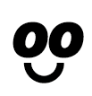

<div class="o-title-detect-container">
    <span class="o-title-detection" id="titleDetection"></span>
    <span class="o-group-detect" id="groupDetection"></span>
    <div class="o-session-time">
        <span>Inicio:&nbsp;<span id="currentSessionStartTime"></span></span>
        <span>Fin:&nbsp;<span id="currentSessionEndTime"></span></span>
    </div>
</div>
<br>
<!-- entorno de la camara -->
<div class="o-session-content">
</div>
<br>
<!-- panel donde se agregan todos los botones de control -->
<div class="o-footer-detection">
    <button class="o-btn-start o-btn-primary"> Comenzar</button>
    <!-- boton de apagar camara -->
    <div class="o-dot-icon-container">
        <button class=" o-btn-secundary" onclick="camera()">
            <div class="o-icon-text ">
                
                <span class="o-text"> Apagar</span>
            </div>
        </button>
        <button class="o-btn-secundary o-btn-dots">
            <div class="o-dots">
                <div class="o-dot-blank"></div>
                <div class="o-dot-blank"></div>
                <div class="o-dot-blank"></div>
            </div>
        </button>
    </div>
    
    <!-- boton de apagar microfono -->
    <div class="o-micro-container">
        <div class="o-dot-icon-container">
            <button class=" o-btn-secundary" onclick="micro()">
                <div class="o-icon-text">
                    
                    <span class="o-text"> Silenciar</span>
                </div>
            </button>
            <button class="o-btn-secundary o-btn-dots">
                <div class="o-dots">
                    <div class="o-dot-blank"></div>
                    <div class="o-dot-blank"></div>
                    <div class="o-dot-blank"></div>
                </div>
            </button> 
        </div>&nbsp;
        <!-- barra de sonido -->
        <div class="o-sound-bar"></div>
    </div>
    <!-- boton donde se despliega la emocion detectada -->
    <button class=" o-btn-secundary o-btn-img"> </button>
</div>